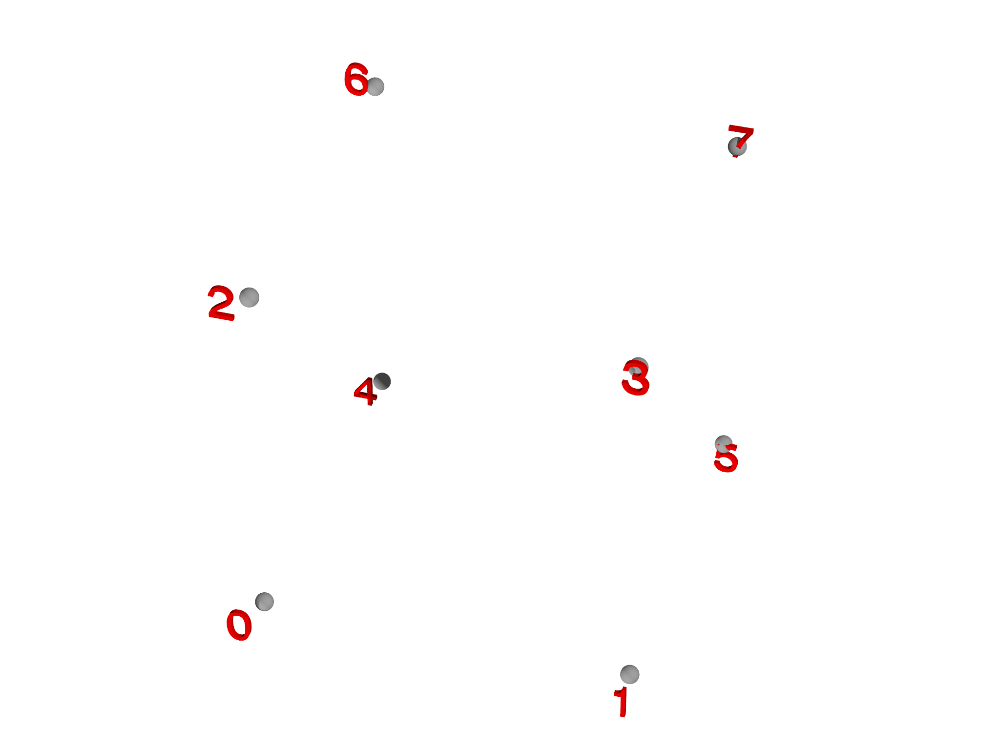
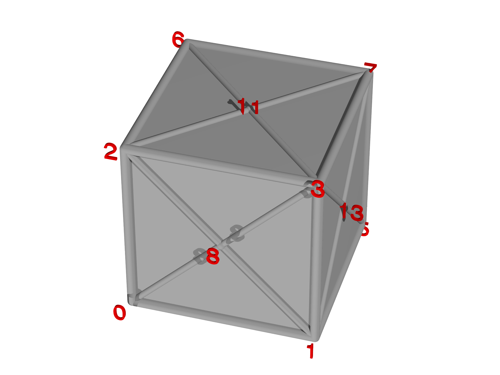

El módulo meshtools
Meshtools proporciona muchas funciones útiles para trabajar con mallas, incluidos constructores para crear ciertos tipos de mallas y también clases para refinar, desengrasar y fusionar mallas.
LineMesh
La función LineMesh es una forma conveniente de crear una malla a partir de una función paramétrica de un parámetro. Debe especificar la función que se va a utilizar y un rango de puntos que se va a generar. A continuación, LineMesh evalúa cada punto del rango y los une con un elemento de línea.
Esto es útil para generar mallas como una línea recta simple (Fig. 5.4, panel izquierdo):
var m = LineMesh(fn (t) [t,0], -1..1:0.1)
También puede solicitar que los extremos de la malla se unan para formar un bucle especificando closed. Este código genera un círculo (Fig. [5.4](#fig: LineMesh), panel central):
var m = LineMesh(fn (t) [cos(t),sin(t)], -Pi...Pi:2*Pi/10, closed=true)
Puede aumentar la resolución del círculo cambiando el tamaño del paso en el Rango, por ejemplo a 2``*``Pi/20 para duplicar el número de puntos. Tenga en cuenta el uso del operador exclusivo Range aquí, …, en lugar de .. para evitar la duplicación del punto en (1,0).
La malla de salida puede ser de cualquier dimensión, como esta hélice en 3D (Fig. 5.4, panel derecho). Tenga en cuenta que aquí usamos una función regular en lugar de una función anónima:
fn helix(t) {
return [cos(2*Pi*t),t/2,sin(2*Pi*t)]
}
var m = LineMesh(helix, -2..2:1/20)


AreaMesh
AreaMesh es similar a la función LineMesh que crea una malla a partir de una función paramétrica, que ahora toma dos parámetros. Para crear un cuadrado,
var m = AreaMesh(fn (u,v) [u,v,0], -1..1:0.2, -1..1:0.2)
donde observe que se requiere un rango separado para \(u\) y \(v\). De forma predeterminada, la salida de AreaMesh solo contiene elementos de grado 0 y grado 2, es decir, vértices y facetas, como se puede ver en la Fig. 5.5 (izquierda). Para agregar elementos de grado 1 si es necesario, llame al método addgrade en la malla:
m.addgrade(1)
Esto da el resultado que se muestra en la Fig. 5.5 (derecha).


addgrade.Al igual que con LineMesh, las mallas se pueden cerrar en una o ambas direcciones, lo que permite la creación de un cilindro,
m = AreaMesh(fn (u, v) [v, cos(u), sin(u)],
-Pi...Pi:Pi/16,
-2..2:0.1, closed=[true, false])
y un toroide,
var c=1, a=0.5 m = AreaMesh(fn (u, v) [(c + a*cos(v))*cos(u),
(c + a*cos(v))*sin(u),
a*sin(v)],
0...2*Pi:Pi/16,
0...2*Pi:Pi/8, closed=true)
Los resultados de estos se muestran en la Fig. 5.6. Tenga en cuenta que las mallas generadas por más módulos que incorporan algún grado de control de calidad, por ejemplo, implicitmesh o meshgen, son generalmente mejores y deben usarse con preferencia a las creadas por AreaMesh.


PolyhedronMesh

PolyhedronMesh ayuda a crear mallas correspondientes a poliedros. Para hacer un cubo, por ejemplo, especificamos los ocho vértices (ver Fig. 5.7, izquierda),
var vertices = [[-0.5, -0.5, -0.5],
[ 0.5, -0.5, -0.5],
[-0.5, 0.5, -0.5],
[ 0.5, 0.5, -0.5],
[-0.5, -0.5, 0.5],
[ 0.5, -0.5, 0.5],
[-0.5, 0.5, 0.5],
[ 0.5, 0.5, 0.5]]
y las seis caras,
var faces = [ [0,1,3,2], [4,5,7,6],
[0,1,5,4], [3,2,6,7],
[0,2,6,4], [1,3,7,5] ]
Tenga en cuenta que los identificadores de vértices deben proporcionarse en orden de dar la vuelta a cada cara (ver Fig. 5.7, centro). Una vez especificadas las caras, podemos crear la malla,
var m = PolyhedronMesh(vertices, faces)
m.addgrade(1)
Tenga en cuenta que PolyhedronMesh crea automáticamente vértices adicionales y genera triángulos para completar la malla (ver Fig. 5.7, derecha). A continuación, añadimos elementos de línea (grado 1), ya que no son creados automáticamente por PolyhedronMesh.
DelaunayMesh


La función constructora DelaunayMesh realiza una "triangulación" delaunay de un conjunto de puntos. Por ejemplo, la creación de una nube aleatoria de puntos (Fig. 5.8, panel izquierdo):
var pts = []
for (i in 0...100) pts.append(Matrix([2*random()-1, 2*random()-1, 2*random()-1]))
entonces podemos llamar a DelaunayMesh para construir una tetraedralización. DelaunayMesh solo genera elementos de la más alta calidad (en 2D, elementos de área, en elementos de volumen 3D), por lo que si se necesitan bordes, estos se pueden agregar con 'addgrade'.
var m=DelaunayMesh(pts)
m.addgrade(1)
La tetraedralización resultante se muestra en la Fig. 5.8, panel derecho.
ChangeMeshDimension
De vez en cuando, uno desea tomar una malla incrustada en un espacio, digamos dos dimensiones, e incrustarla en un espacio de diferente dimensionalidad. Por ejemplo, es posible que desee utilizar una malla 2D generada con MeshGen en el espacio 3D. La función ChangeMeshDimension proporciona una forma cómoda de hacerlo:
var new = ChangeMeshDimension(mesh, dim)
donde dim es la dimensión de destino de la nueva malla.
MeshBuilder
La clase MeshBuilder facilita la construcción manual de un objeto Mesh. Está destinado principalmente a ser utilizado por otros algoritmos de construcción de mallas, pero ocasionalmente es útil. Para empezar, cree un objeto MeshBuilder:
var mb = MeshBuilder()
A continuación, puede agregar vértices y otros elementos uno por uno llamando a los métodos adecuados. Construyamos un tetraedro añadiendo primero los vértices:
mb.addvertex([0, 0, 0.612372])
mb.addvertex([-0.288675, -0.5, -0.204124])
mb.addvertex([-0.288675, 0.5, -0.204124])
mb.addvertex([0.57735, 0, -0.204124])
A continuación, tenemos que añadir aristas que conecten estos vértices, y también caras. Podríamos hacer esto uno por uno, dando una lista de identificadores de vértices para cada elemento a su vez,
mb.addedge([0,1])
mb.addedge([0,2])
// ... etc.
pero hay una forma más inteligente para este caso. Observe que los identificadores de vértices correspondientes a las aristas del tetraedro corresponden a los conjuntos de tamaño 2 generados a partir de la lista [``0,1,2,3``] como se puede ver ejecutando este código:
var vids = [0,1,2,3]
for (s in vids.sets(2)) print s
Por lo tanto, podemos generar las aristas automáticamente,
var vids = [0,1,2,3]
for (s in vids.sets(2)) mb.addedge(s)
y las caras también, que son los conjuntos de tamaño 3,
for (s in vids.sets(3)) mb.addface(s)
Podemos terminar añadiendo un único elemento de grado 3 correspondiente al volumen:
mb.addvolume(vids)
Una vez que se hayan agregado todos estos, llame al método build para crear un objeto Mesh:
var m = mb.build()
y la malla resultante se muestra en la Fig. 5.9.